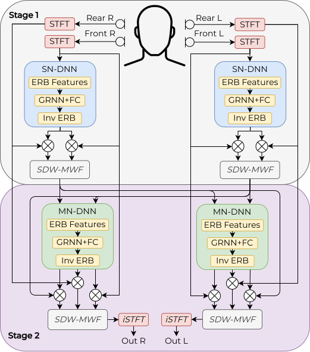

Abstract
Real-time binaural speech enhancement is constrained by latency, computational cost, and inter-device communication, yet existing efficient solutions predominantly address single-channel settings. In this paper, we introduce RT-Tango, a real-time distributed binaural speech enhancement framework designed for streaming on resource-constrained platforms and specifically for hearing aids. RT-Tango relies on a two-stage distributed architecture combining perceptually motivated ERB feature compression, lightweight grouped recurrent mask estimation, and temporal sparsification to reduce computational cost. Stringent latency constraints are addressed by decoupling spectral resolution from algorithmic delay using an asymmetric STFT, together with causal recurrent inference and online estimation of spatial statistics. Experimental results show that RT-Tango achieves competitive speech enhancement while significantly reducing MACs operations and functioning at ultra-low latencies as low as 8 ms.
RT-Tango

RT-Tango is a distributed binaural speech enhancement framework designed for deployment on modern hearing devices, where computational resources, power consumption, and latency are tightly constrained. Building upon the original Tango architecture, RT-Tango combines architectural and signal-processing optimizations to substantially reduce computational complexity while maintaining speech enhancement performance and preserving binaural spatial cues.
We also introduce RT-Tango-OS, a strictly causal streaming version of the model. With an algorithmic latency of only 8 ms, RT-Tango-OS is suitable for real-time operation and meets the latency requirements of practical binaural hearing aid applications.
Audio Examples
The audio examples below illustrate the performance of RT-Tango under a range of acoustic conditions. Each row corresponds to a different test scenario with varying input signal-to-noise ratios (SNRs). For each example, the following audio signals are provided for comparison:
- Noisy Input
- Clean Reference
- Tango (Baseline)
- GTCRN
- RT-Tango (Ours)
All audio samples are taken from the Binaurec dataset, a binaural speech corpus comprising mixtures generated using measured room impulse responses (RIRs). The RIRs were recorded with a portable hearing laboratory (PHL) equipped with behind-the-ear hearing aids mounted on a dummy head, providing realistic binaural recordings.
The evaluation considers acoustic configurations in which the target speaker is positioned directly in front of the listener, while the interfering noise source is located either 45° (scenario A) or 90° (scenario B) to the right of the target. These configurations produce a lower signal-to-interference ratio (SIR) at the right ear than at the left ear, reflecting realistic spatial listening conditions.
Computational Cost
Total cost is reported in MMAC/s per processing node.
| Method | STFT hop | Total MMAC/s |
|---|---|---|
| Tango (Baseline) | 16 ms | 605.98 |
| GTCRN | 4 ms | 197.50 |
| RT-Tango (Ours) | 4 ms | 33.41 |
MMAC/s = million multiply-accumulate operations per second of audio.
BibTeX
@inproceedings{benslimane26_interspeech,
title={{RT-Tango: Real-Time Distributed Binaural Speech Enhancement for Low-Power Hearing Aid Devices}},
author={Zahra Benslimane and Pierre Chouteau and Martyna Poreba and Fabrice Auzanneau and Michal Szczepanski and Fabian Chersi and Romain Serizel},
year={2026},
booktitle={{Interspeech 2026}},
pages={3027--3031},
doi={10.21437/Interspeech.2026-3301},
issn={2958-1796},
}